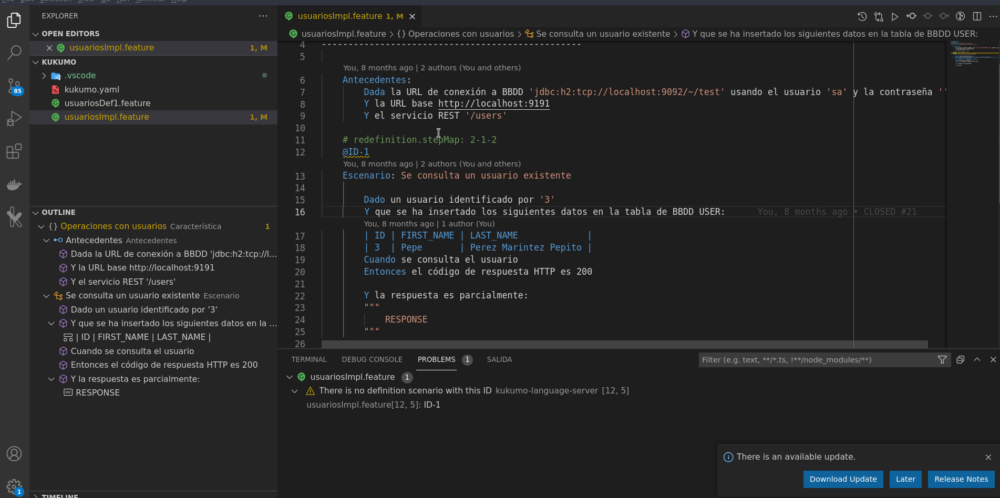

Instalalación
Descarga e instalación de la extensión empaquetada como VSIX
Los siguientes pasos requiren que acceso al Gitlab y al servidor Nexus del ITI.
-
Instalar Visual Studio Code (en caso de no tenerlo) desde su sitio web
-
Descargar la extensión empaquetada de la siguiente url: https://github.com/iti-ict/kukumo/raw/main/kukumo-vscode-extension/kukumo-vscode-extension-latest.vsix
-
. Instalar la extensión:
- Ir a la pestaña Extensions
- Pulsar sobre el botón
... - Seleccionar Install from VSIX...
- Seleccionar el fichero descargado en el paso anterior

Configurando la extensión
Una vez instalada, hay ciertos parametros de configuración que pueda ser queramos
ajustar. Para ello, pulsar el icono de rueda dentada en la parte inferior izquierda y
seleccionar Settings (o pulsar Ctrl+coma si usamos los atajos de teclado estándar).
A continuación escribir kukumo en los filtros.

La configuración por defecto está preparada para funcionar con un servidor de ejecuciones local, pero podemos cambiar las URL de conexión si queremos usar un servidor remoto.
Ajustar el modo de lenguaje al abrir archivos
Es posible que en el momento de instalar la extensión, ya tengamos
alguna otra extensión para la edición de archivos Gherkin. De ser así, cuando abramos un archivo (.feature) no usará la extensión de Kukumo inicialmente. Podemos detectarlo en la parte derecha de la barra inferior:

En esta circunstancia, deberemos pulsar sobre el texto Gherkin
en la barra, seleccionar la opción Configure file association...
y buscar el modo de lenguaje Kukumo Gherkin. Tras
eso, el resto de archivos .feature ya se cargarán usando Kukumo.

Instalación del servidor de ejecución
Si no se dispone acceso remoto a un servidor de ejecución, podemos instalar uno en nuestra propia máquina desde una imagen Docker. Para mayor facilidad usaremos una imagen all-in-one que incluye pre-instalados varios plugins.
Para ello:
-
Identficarse en el servidor Nexus del ITI:
docker login nexus-kukumo.iti.upv.es -
Descargar la imagen y ejecutarla en un contenedor:
docker run -d --rm -p 8880:8080 -p 8890:8090 --name kukumo-server-demo nexus-kukumo.iti.upv.es/kukumo-server-demo:latestPodemos enrutar los puertos a otros diferentes en caso de estar ocupados, pero actualizando la configuración de Kukumo en VS Code

Uso de la extensión VS Code
Autocompletado de pasos
El principal valor aportado es el autocompletado de keywords y pasos. Se puede invocar con la combinación de teclas definida en VS Code para tal efecto (por defecto Ctrl+Espacio).

Nótese que el idioma usado para las opciones de autocompletado
varía en función del idioma definido para el fichero con la propiedad
language (siendo inglés si no se define):

Marcado de errores
Si escribimos un paso que no concuerda con nada de lo disponible en las librerías de pasos, se nos marcará el error correspondiente.

Generación de IDs
Si un escenario no tiene un ID definido, se muestra un aviso informando de ello. Además, ofrece la opción de generar uno nuevo (usando texto aleatorio).

Generación de implementación
Cuando un escenario está marcado como definición y tiene su ID correspondiente, pero no existe ningún escenario a nivel implementación con el mismo ID, se muestra un aviso. Además, ofrece la opción de generar un esqueleto de implementación automáticamente.

Navegación entre definición e implementación
Cuando tengamos un escenario escrito en dos niveles (y correctamente etiquetados con su ID), tendremos la posibilidad de navegar entre uno y otro con el atajo de teclado correspondiente definido en VS Code (F12 y Ctrl+F12 por defecto) o con el menú contextual. También podemos echar un vistado rápido (peek) sin tener que abandonar el fichero.